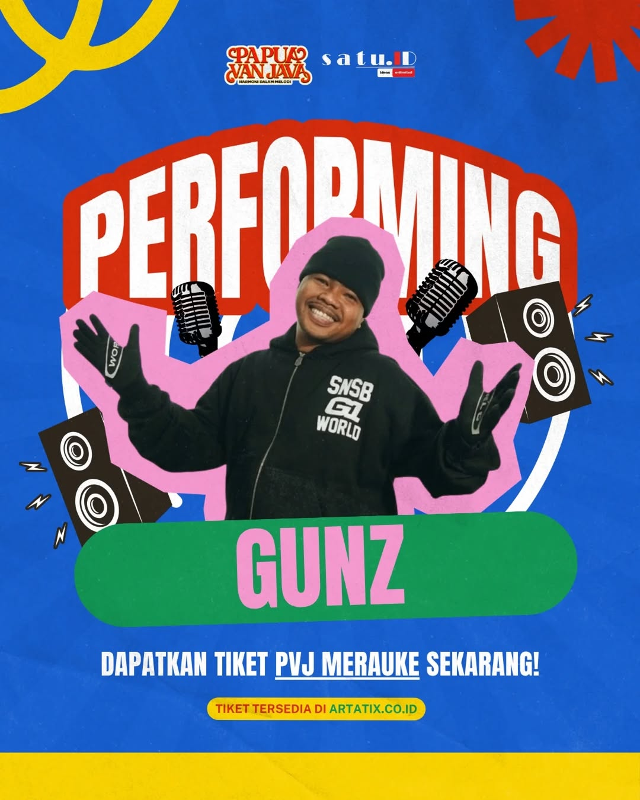
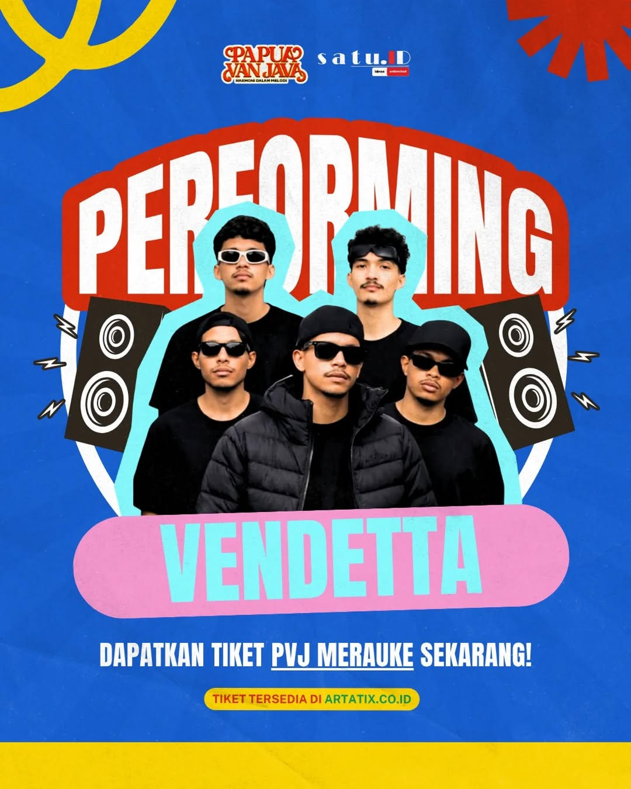
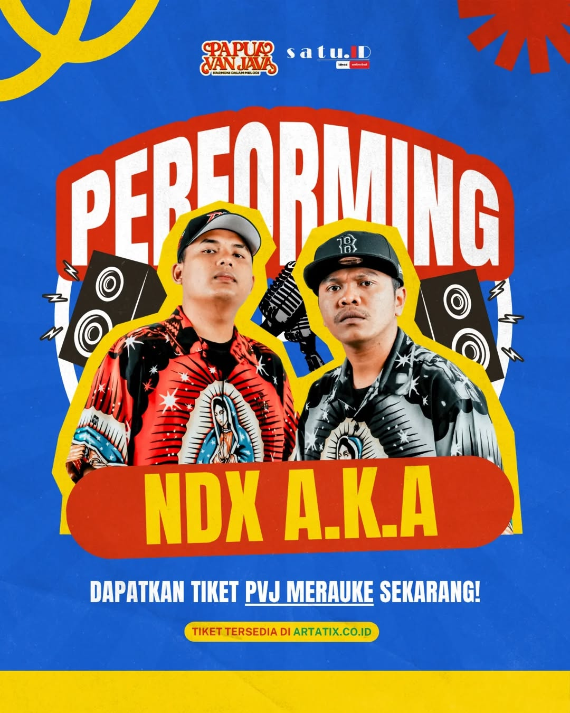

PAPUA VAN JAVA - JAYAPURA
Penyelenggara
Official Organizer
Deskripsi KONSER PAPUA VAN JAVA - HARMONI DALAM MELODI ADALAH TOUR KONSER TERBESAR DI TAHUN 2026 DENGAN TUJUAN MELAKUKAN BRANDING/PENCITRAAN TERHADAP KERUKUNAN PAPUA. MELALUI KONSER MUSIK SEMUA ETNIS, SUKU DAN KOMPONEN MASYARAKAT DI PAPUA HIDUP DALAM HARMONI SERTA RUKUN. ATAS DASAR TUJUAN TERSEBUT MAKA SATU.ID MENCOBA UNTUK MENGHADIRKAN GRUP HIP HOP ASAL JOGJA NDX A.K.A DALAM TOUR KONSER DI TIGA KOTA BESAR DI PAPUA YAKNI SORONG SEBAGAI KONSER PEMBUKA, MERAUKE SEBAGAI KONSER KEDUA DAN KONSER PENUTUP DI JAYAPURA. SEBAGAI GUEST STAR KONSER PVJ ADALAH NDX A.K.A DAN ADDITONAL PERFORMANCE ADALAH GRUP HIP HOP ASAL SORONG ROCHA MARCH, GRUP HIP HOP ASAL JAYAPURA ANADOK DAN GRUP HIP HOP ASAL MERAUKE NOT EMPTY. PEMILIHAN KETIGA GRUP ASAL PAPUA TERSEBUT JUGA DENGAN PERTIMBANGAN FILOSOFI SORONG SEBAGAI GERBANG MASUK BARAT KE PAPUA, DAN DILANJUTKAN MERAUKE SEBAGAI KOTA DI PAPUA YANG PALING DIKENAL, DAN JAYAPURA SEBAGAI KOTA PALING TIMUR DI INDONESIA. KETIGA KOTA TERSEBUT DIYAKINI MAMPU MEMPRESENTASIKAN KEBERAGAMAN PAPUA MULAI DARI BARAT KE TIMUR, SELATAN KE UTARA KITA ADALAH PAPUA, KITA ADALAH INDONESIA..
- Entry Pass yang valid adalah yang dibeli melalui artatix.co.id.
- Pembayaran Hanya di Artatix. Tidak ada pembayaran melalui rekening pribadi. Jika membayar ke rekening lainnya, maka diluar tanggungjawab Panitia dan Promotor.
- Setiap tiket berlaku untuk 1 (satu) orang dan tidak berlaku multiple entry (bolak balik) masuk ke area konser PVJ.
- Panitia dan Promotor tidak bertanggung jawab / tidak ada penggantian kerugian atas pembelian tiket acara melalui calo / tempat / kanal / platform yang bukan mitra resmi penjualan tiket.
- Tiket yang hilang / dicuri tidak akan diganti atau diterbitkan ulang. Meskipun anda memiliki bukti pembelian. Tiket kalian merupakan tanggung jawab kalian.
- Panitia acara, Promotor, dan Pengisi Acara tidak bertanggung jawab atas biaya transportasi atau akomodasi yang telah dikeluarkan penonton untuk mengunjungi acara jika seandainya acara harus dibatalkan atau dipindahkan ke hari dan atau waktu lain.
- Konser ini tidak diperkenankan membawa balita. Usia menonton wajib diatas 10 tahun
- Dalam keadaan-keadaan kahar seperti bencana alam, kerusuhan, perang, wabah, dan semua keadaan darurat yang diumumkan secara resmi oleh Pemerintah. Panitia / penyelenggara / promotor berhak untuk membatalkan dan atau merubah waktu acara dan atau tata letak tempat tanpa pemberitahuan sebelumnya.
- Jika acara dibatalkan, Promotor harus mengembalikan uang pembelian tiket yang sudah dibeli dengan jangka waktu yang akan diinfokan lebih lanjut oleh Promotor, tetapi akan dipotong biaya bank, biaya lain-lain dan pembayaran lain yang mungkin dikenakan untuk mentransfer uang kembali ke pelanggan.
- Panitia / Penyelenggara / Promotor berhak untuk, merevisi waktu acara, tata letak tempat dan kapasitas penonton tanpa pemberitahuan sebelumnya.
- Panitia acara / penanggung jawab tempat acara, promotor, dan pengisi acara tidak bertanggung jawab atas hilangnya barang-barang pribadi para penonton atau kejadian-kejadian yang mengakibatkan cedera di semua area acara selama acara berlangsung, dengan alasan apapun.
- Harap membawa kartu ID fisik dan asli (KTP) dan e-Ticket dari artatix.co.id pada saat melakukan penukaran tiket.
- Kami menyarankan agar para penonton menggunakan transportasi online
- Melarang penonton masuk jika Entry Pass telah digunakan oleh orang lain.
- Promotor berhak untuk: A. Melarang penonton masuk jika Entry Pass telah digunakan oleh orang lain. B. Melarang penonton masuk ke area konser jika Entry Pass yang digunakan tidak valid. C. Memproses atau mengajukan hukuman, baik perdata maupun pidana, terhadap pengunjung yang mendapatkan Entry Pass secara tidak sah, termasuk ditemukannya memalsukan dan menggandakan Entry Pass yang sah atau memperoleh Entry Pass dengan cara yang tidak sesuai dengan prosedur.
- Penyelenggara dapat mengambil tindakan tegas, dan berhak mengeluarkan pengunjung dari area konser jika tidak mematuhi protokol kesehatan yang telah diterapkan.
- Barang yang boleh dibawa ke dalam venue: A. Kartu identitas, dompet dan uang pribadi B. Bukti tiket / tanda masuk C. Handbag D. Masker dan hand sanitizer E. Obat-obatan pribadi F. Jas hujan G. Handphone / perangkat lainnya
- Barang yang tidak diperbolehkan dibawa ke dalam area konser: A. Atribut / bendera / identitas dari kelompok sepak bola, politik, ras dan agama. B. Makanan dan minuman dari luar ke dalam area konser. C. Kamera profesional seperti Drone, SLR, DSLR dsb. D. Tongsis atau Selfie Stick. E. Payung. F. Minuman beralkohol, obat-obatan terlarang, psikotropika, atau barang yang mengandung zat berbahaya lainnya. G. Senjata tajam / api, bahan peledak, dan benda-benda berbahaya lainnya yang dilarang menurut ketentuan peraturan perundang-undangan yang berlaku. H. Cairan dan benda yang mudah terbakar. I. Tas atau ransel berukuran besar. J. Laser dan pointer. K. Barang berbahaya yang dapat membahayakan orang lain maupun diri sendiri dalam bentuk apapun yang belum disebutkan pada peraturan diatas.


